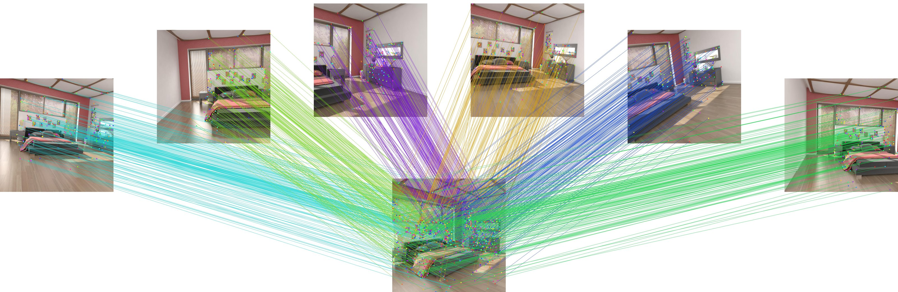
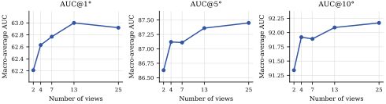

Geometry-aware descriptors
A frozen multi-view foundation model encodes the whole star once; its cross-view tokens enrich every local descriptor.
Visualization
Each star links one centre image to six neighbours; MVLoMa predicts the sparse matches of all six edges in a single forward pass.

Paper
Local feature matching is typically formulated for image pairs, although structure-from-motion and visual localization commonly match one reference image against many retrieved or covisible neighbours. Applying a pairwise matcher independently to these centre–neighbour edges duplicates reference-side computation and prevents the matcher from exploiting complementary multi-view geometric evidence from the remaining observations.
To address these limitations, we introduce MVLoMa, a sparse star-graph matcher that extends LoMa from image pairs to multiple views. MVLoMa first uses a frozen multi-view geometry model to jointly describe all images in a star, then injects the resulting cross-view geometric context into local descriptors. It then matches the centre image to all neighbours in a single forward pass through per-view self-attention and bidirectional centre–neighbour cross-attention. For supervision, we derive positive correspondences only from depth-valid, mutually visible dense warps and explicitly penalize high-confidence matches that violate epipolar geometry.
On 25-view star graphs from HyperSim, ScanNet++, Mip-NeRF 360, and Tanks and Temples, MVLoMa obtains the best macro-average relative-pose AUC among the compared methods at all three thresholds (58.65/85.41/90.99). Its matcher is 2.20× faster than sequential evaluation of the 24 centre–neighbour edges. The same design supports four tested frozen geometry encoders—DA3, π³, VGGT, and VGGT-Ω—with DA3-Giant performing best on all reported encoder-ablation metrics. Controlled ablations further isolate the effects of geometry-aware descriptors, visibility filtering, geometric negative supervision, and joint multi-view inference.
Approach
A frozen multi-view foundation model encodes the whole star once; its cross-view tokens enrich every local descriptor.
The centre and all neighbours exchange information through bidirectional cross-attention, while each edge keeps its own sparse matches.
Positives come only from mutually visible pixels, and confident matches that violate epipolar geometry are penalized.
Evaluation
| Method | HyperSim | ScanNet++ | Mip-NeRF 360 | T&T | Average | ||||||||||
|---|---|---|---|---|---|---|---|---|---|---|---|---|---|---|---|
| @1° | @5° | @10° | @1° | @5° | @10° | @1° | @5° | @10° | @1° | @5° | @10° | @1° | @5° | @10° | |
| Two-view | |||||||||||||||
| LightGlue | 20.20 | 47.34 | 55.72 | 22.84 | 61.83 | 74.49 | 51.28 | 83.46 | 90.02 | 52.42 | 84.69 | 91.08 | 36.69 | 69.33 | 77.83 |
| LoMa-L | 51.99 | 77.00 | 82.86 | 37.68 | 75.57 | 85.14 | 71.69 | 93.25 | 96.50 | 68.22 | 91.96 | 95.74 | 57.40 | 84.44 | 90.06 |
| RoMa | 45.06 | 64.82 | 69.78 | 36.81 | 73.88 | 83.70 | 75.42 | 93.27 | 95.88 | 66.56 | 90.99 | 95.01 | 55.96 | 80.74 | 86.09 |
| RoMa v2 | 52.93 | 80.65 | 86.92 | 33.02 | 73.33 | 84.58 | 74.81 | 94.16 | 97.00 | 67.06 | 91.32 | 95.37 | 56.95 | 84.87 | 90.97 |
| Multi-view | |||||||||||||||
| MV-RoMa (13v) | 37.00 | 58.51 | 64.51 | 35.80 | 71.57 | 81.67 | 74.45 | 92.93 | 95.61 | 66.04 | 90.56 | 94.75 | 53.32 | 78.39 | 84.14 |
| MVLoMa (504) | 53.35 | 78.99 | 84.76 | 38.03 | 74.72 | 84.67 | 73.90 | 94.04 | 96.97 | 68.08 | 91.91 | 95.74 | 58.34 | 84.91 | 90.53 |
| MVLoMa (784) | 53.90 | 80.02 | 85.99 | 38.44 | 75.68 | 85.33 | 74.29 | 94.08 | 96.97 | 67.96 | 91.84 | 95.68 | 58.65 | 85.41 | 90.99 |
Controlled studies of supervision, frozen representation, encoder choice and star size.
| Variant | HyperSim | Mip-NeRF 360 | ||||
|---|---|---|---|---|---|---|
| @1° | @5° | @10° | @1° | @5° | @10° | |
| Full | 52.84 | 78.42 | 84.34 | 73.85 | 93.96 | 96.92 |
| w/o GT filtering | 51.93 | 77.75 | 83.77 | 73.69 | 93.85 | 96.83 |
| w/o negative loss | 51.04 | 76.96 | 83.19 | 72.72 | 93.42 | 96.55 |
Both components help. Removing the geometric negative loss costs the most at the strict threshold (HyperSim AUC@1° 52.84 → 51.04, vs. 52.84 → 51.93 without GT filtering). Filtering keeps invalid dense warps out of the positives, while the negative term targets confident false matches that survive assignment. DA3-G, four-view training, tested at 784.
| Backbone | HyperSim | AerialMD | ||
|---|---|---|---|---|
| o > 0.35 | o > 0.05 | o > 0.35 | o > 0.05 | |
| DA3-G | 69.27 | 61.14 | 77.97 | 48.16 |
| DINOv2-G | 68.11 | 49.70 | 77.56 | 47.51 |
| DINOv2-L | 67.72 | 48.29 | 77.33 | 47.08 |
Geometry-aware tokens beat a bigger 2D backbone. With data, resolution, matcher, losses and optimization fixed, DA3-G improves AUC@1° over DINOv2-G by 1.16, 11.44, 0.41 and 0.65 points on the four subsets. The small DINOv2-G vs. DINOv2-L gap shows that scaling the frozen 2D backbone alone does not explain the gain. Overlap o follows the RoMa v2 definition.
| Encoder | HyperSim | MegaDepth-X | TerraSky3D | ||||||
|---|---|---|---|---|---|---|---|---|---|
| @1° | @5° | @10° | @1° | @5° | @10° | @1° | @5° | @10° | |
| DA3-G | 53.90 | 80.02 | 85.99 | 18.88 | 52.97 | 65.77 | 55.53 | 83.88 | 90.04 |
| π³ | 51.50 | 76.56 | 82.57 | 18.37 | 52.78 | 65.42 | 53.77 | 82.81 | 89.45 |
| VGGT | 52.28 | 78.17 | 84.26 | 18.05 | 52.22 | 64.70 | 53.21 | 81.92 | 88.56 |
| VGGT-Ω | 52.07 | 77.70 | 83.46 | 18.43 | 52.91 | 65.58 | 55.21 | 83.38 | 89.78 |
Any geometry foundation model plugs in. The same descriptor head and star matcher run on all four frozen encoders. DA3-G is best on every reported metric and leads HyperSim AUC@1° by 1.62–2.40 points, while VGGT-Ω is close on MegaDepth-X and TerraSky3D: the quality of the frozen tokens matters.
| # views | HyperSim | Mip-NeRF 360 | T&T | TerraSky3D | Average | ||||||||||
|---|---|---|---|---|---|---|---|---|---|---|---|---|---|---|---|
| @1° | @5° | @10° | @1° | @5° | @10° | @1° | @5° | @10° | @1° | @5° | @10° | @1° | @5° | @10° | |
| 2 | 52.51 | 77.63 | 83.29 | 73.96 | 94.02 | 96.95 | 67.63 | 91.86 | 95.73 | 54.76 | 83.01 | 89.37 | 62.21 | 86.63 | 91.34 |
| 4 | 53.79 | 79.43 | 85.68 | 74.31 | 94.02 | 96.95 | 67.85 | 91.89 | 95.78 | 54.58 | 83.13 | 89.29 | 62.63 | 87.12 | 91.92 |
| 7 | 53.90 | 79.13 | 85.14 | 74.32 | 94.06 | 96.97 | 67.89 | 91.82 | 95.70 | 54.97 | 83.42 | 89.75 | 62.77 | 87.11 | 91.89 |
| 13 | 54.47 | 80.12 | 85.88 | 74.20 | 94.04 | 96.96 | 67.92 | 91.82 | 95.66 | 55.39 | 83.47 | 89.85 | 63.00 | 87.36 | 92.09 |
| 25 | 53.90 | 80.02 | 85.99 | 74.29 | 94.08 | 96.97 | 67.96 | 91.84 | 95.68 | 55.53 | 83.88 | 90.04 | 62.92 | 87.45 | 92.17 |

Joint multi-view inference helps. The evaluated edges are fixed, so only the number of jointly processed neighbours changes. At two views star matching degenerates to pair matching and the macro-average drops to 62.21/86.63/91.34, about 0.8 points below the best multi-view result at every threshold. Beyond two views the gains depend on dataset and threshold and are not monotonic (HyperSim AUC@1° peaks at 13 views), while the model, trained on 2–8 views, extrapolates to 25.
Complexity
A star shares the centre-side self-attention, projections and feed-forward networks across all of its edges. With K = 2048 keypoints, d = 512 and L = 9 layers, the theoretical compute ratio is Cpair / Cstar = 70(V−1) / (43V−16) for a star with V views.
Matcher only: nine LoMa-L layers, 2048 keypoints, one NVIDIA A800, batch size 1; mean of 46 of 50 trials after dropping the two fastest and two slowest.
FLOPs count a multiply–add as two operations. Sp. is the pairwise / star ratio. Two-view outputs are identical, an implementation sanity check.
| Views | Edges | Theory (TFLOPs) | A800 (ms) | ||||
|---|---|---|---|---|---|---|---|
| Pair | Star | Sp. | Pair | Star | Sp. | ||
| 2 | 1 | 0.676 | 0.676 | 1.00× | 20.95 | 21.18 | 0.99× |
| 4 | 3 | 2.029 | 1.508 | 1.35× | 57.98 | 37.15 | 1.56× |
| 7 | 6 | 4.059 | 2.754 | 1.47× | 113.81 | 60.50 | 1.88× |
| 13 | 12 | 8.117 | 5.247 | 1.55× | 237.60 | 105.78 | 2.25× |
| 25 | 24 | 16.235 | 10.234 | 1.59× | 446.96 | 203.09 | 2.20× |
Reference
If you find MVLoMa useful, please cite our work.
@misc{lu2026mvloma,
title = {{MVLoMa}: Multi-View Local Feature Matching with Any Geometry Foundation Model},
author = {Lu, Xinyang and Wei, Shengzhe and Tang, Sheng and Zhang, Weiqi and Fang, Juntong and Li, Zesong},
note = {Kosmo Research preprint},
year = {2026}
}